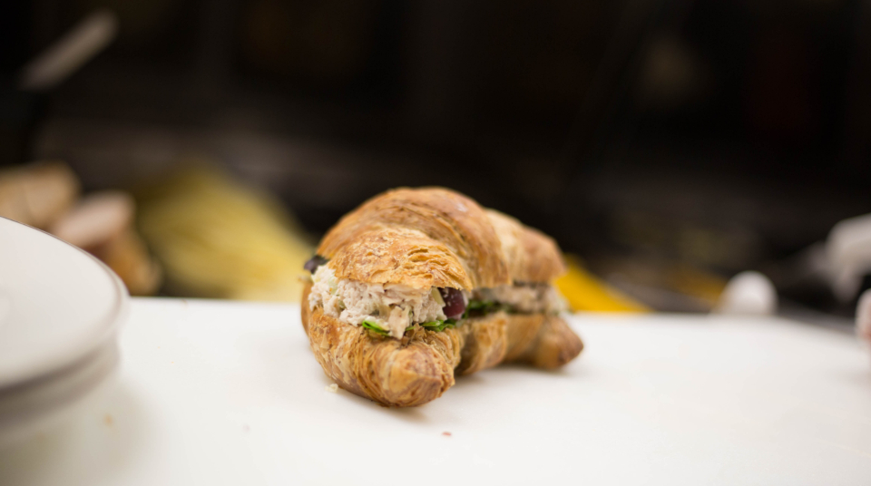

ご来店のお客様
小さなお子様と一緒に伺いましたが、素敵な雰囲気の店内で、お子様向けのりんごジュースも用意していただき、ゆっくりくつろぐことができました。テイクアウトもできる中、カウンター4席は途切れることなくお客様で賑わっていて驚きました。本日のコーヒーとしてご紹介いただいた中国産の発酵豆は、ブランデーのような甘い香りと、香ばしいお茶を思わせる余韻が印象的でした。購入して持ち帰った豆を飲むのも楽しみです。
十日町の小さなカウンターで、世界の一杯とロマンチックな時間を。
自家焙煎のシングルオリジンを、カウンターわずか4席で。
新潟県十日町市本町 / 自家焙煎 / カウンター4席
ロマンチックコーヒーオッタでは、豆の焙煎から店主自らが手がけています。炎とじっくり向き合いながら仕上げられる一杯は、カウンターわずか4席という小さな空間だからこそ、静かに、丁寧にお届けできるものです。
ご来店くださるお客様からは、「静かで落ち着いたカウンターの時間を過ごせた」「何度訪れても飽きない品揃えで、そのたびに新しい一杯に出会える」といった声をいただいています。店主の人柄と店の雰囲気に癒されたという感想も多く、一杯のコーヒーを介した会話や時間そのものを楽しみに、何度も足を運んでくださる方が多いお店です。
雪深い十日町の町なかで、慌ただしい日常から少し離れ、炎と時間をかけて淹れられた一杯とともに、ゆったりとしたひとときをお過ごしください。
当店では、シングルオリジンのブラックコーヒーを複数種類ご用意しており、お好みでミルクを加えたスタイルもお選びいただけます。豆によって異なる香りや味わいの違いを飲み比べていただけるのも、当店ならではの楽しみです。
店内でゆっくりお過ごしいただくほか、テイクアウトや豆の量り売りにも対応しておりますので、お持ち帰りいただいて、ご自宅でも同じ一杯をお楽しみいただけます。
上記は、これまでにご用意した豆の一例です。常時のお取り扱いをお約束するものではありません。
取り扱う豆は仕入れにより入れ替わります。最新のラインナップは店頭またはInstagramでご確認ください。
ご来店のお客様
小さなお子様と一緒に伺いましたが、素敵な雰囲気の店内で、お子様向けのりんごジュースも用意していただき、ゆっくりくつろぐことができました。テイクアウトもできる中、カウンター4席は途切れることなくお客様で賑わっていて驚きました。本日のコーヒーとしてご紹介いただいた中国産の発酵豆は、ブランデーのような甘い香りと、香ばしいお茶を思わせる余韻が印象的でした。購入して持ち帰った豆を飲むのも楽しみです。
ご来店のお客様
美味しいコーヒーとともに、ゆったりとした時間を過ごせるお店です。ちょっとした休憩にはぴったりの空間で、自家焙煎ならではのこだわりの豆があり、何度足を運んでもそのたびにコーヒーを楽しむことができます。
ご来店のお客様
カウンター4席の、静かで落ち着いたお店です。メニューはシングルオリジンのブラックコーヒーが数種類あり、お好みでミルクを加えることもできます。客席はハイチェアのみのため、足の不自由な方はご注意いただければと思います。
ご来店のお客様
新潟市のコーヒーショップを巡ってきましたが、その中でも際立って美味しいと感じました。1ヶ月間の日本旅の道中、なかなか満足のいく一杯に出会えていなかったので、こちらで最高の一杯をいただけたことに感謝しています。
ご来店のお客様
個性的なコーヒーが揃っており、この日はミャンマー産の豆を選びました。店主の雰囲気とお店の空気にとても癒され、また通いたくなるコーヒー屋さんです。
当店の客席は、カウンターのハイチェアのみとなっております。そのため、お身体の不自由なお客様には座りづらい場合がございます。あらかじめご了承いただけますと幸いです。ご不明な点やご不安な点がございましたら、Instagramのメッセージにて事前にお気軽にお問い合わせください。
※番地等の詳細情報は確認中のため、地図はおおまかな地域表示となります。
PHOTO SAMPLE(フリー素材によるイメージ写真)

